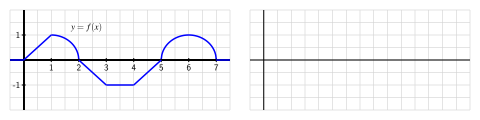

Section5.2The Second Fundamental Theorem of Calculus
Motivating Questions
How does the integral function \(A(x) = \int_1^x f(t) \, dt\) define an antiderivative of \(f\text{?}\)
What is the statement of the Second Fundamental Theorem of Calculus?
How do the First and Second Fundamental Theorems of Calculus enable us to formally see how differentiation and integration are almost inverse processes?
In Section 4.4, we learned the Fundamental Theorem of Calculus (FTC), which from here forward will be referred to as the First Fundamental Theorem of Calculus, as in this section we develop a corresponding result that follows it. Recall that the First FTC tells us that if \(f\) is a continuous function on \([a,b]\) and \(F\) is any antiderivative of \(f\) (that is, \(F' = f\)), then
If we have a graph of \(f\) and we can compute the exact area bounded by \(f\) on an interval \([a,b]\text{,}\) we can compute the change in an antiderivative \(F\) over the interval.
If we can find an algebraic formula for an antiderivative of \(f\text{,}\) we can evaluate the integral to find the net signed area bounded by the function on the interval.
Thus, the First FTC can used in two ways. First, to find the difference \(F(b) - F(a)\) for an antiderivative \(F\) of the integrand \(f\text{,}\) even if we may not have a formula for \(F\) itself. To do this, we must know the value of the integral \(\int_a^b f(x) \, dx\) exactly, perhaps through known geometric formulas for area. In addition, the First FTC provides a way to find the exact value of a definite integral, and hence a certain net signed area exactly, by finding an antiderivative of the integrand and evaluating its total change over the interval. In this case, we need to know a formula for the antiderivative \(F\text{.}\) Both of these perspectives are reflected in Figure 5.2.1.
Figure5.2.1.At left, the graph of \(f(x) = x^2\) on the interval \([1,4]\) and the area it bounds. At right, the antiderivative function \(F(x) = \frac{1}{3}x^3\text{,}\) whose total change on \([1,4]\) is the value of the definite integral at left.
The value of a definite integral may have additional meaning depending on context: as the change in position when the integrand is a velocity function, the total amount of pollutant leaked from a tank when the integrand is the rate at which pollution is leaking, or other total changes if the integrand is a rate function. Also, the value of the definite integral is connected to the average value of a continuous function on a given interval: \(f_{\operatorname{AVG} [a,b]} = \frac{1}{b-a} \int_a^b f(x) \, dx\text{.}\)
In the last part of Section 5.1, we studied integral functions of the form \(A(x) = \int_c^x f(t) \, dt\text{.}\)Figure 5.1.4 is a particularly important image to keep in mind as we work with integral functions, and the corresponding applet 1  can help us understand the function \(A\text{.}\) In what follows, we use the First FTC to gain additional understanding of the function \(A(x) = \int_c^x f(t) \, dt\text{,}\) where the integrand \(f\) is given (either through a graph or a formula), and \(c\) is a constant.
b. Use the First Fundamental Theorem of Calculus to find an equivalent formula for \(A(x)\) that does not involve integrals. That is, use the first FTC to evaluate \(\int_1^x (4-2t) \, dt\text{.}\)
\(A(x)=\)
c. Observe that \(f\) is a linear function; what kind of function is \(A\text{?}\)
Constant
Linear
Quadratic
Cubic
Trigonometric
Non-Algebraic
d. Using the formula you found in (b) that does not involve integrals, compute \(A'(x)\text{.}\)
\(A'(x))=\)
e. While we have defined \(f\) by the rule \(f(t) = 4-2t\text{,}\) it is equivalent to say that \(f\) is given by the rule \(f(x) = 4 - 2x\text{.}\) What do you observe about the relationship between \(A\) and \(f\text{?}\)
A is an antiderivative of f
A is a derivative of f
A is a multiple of f
No relation
Subsection5.2.1The Second Fundamental Theorem of Calculus
The result of Preview Activity 5.2.1 is not particular to the function \(f(t) = 4-2t\text{,}\) nor to the choice of “\(1\)” as the lower bound in the integral that defines the function \(A\text{.}\) For instance, if we let \(f(t) = \cos(t) - t\) and set \(A(x) = \int_2^x f(t) \, dt\text{,}\) we can determine a formula for \(A\) by the First FTC. Specifically,
and thus we see that \(A'(x) = f(x)\text{,}\) so \(A\) is an antiderivative of \(f\text{.}\) And since \(A(2) = \int_2^2 f(t) \, dt = 0\text{,}\)\(A\) is the only antiderivative of \(f\) for which \(A(2) = 0\text{.}\)
In general, if \(f\) is any continuous function, and we define the function \(A\) by the rule
where \(c\) is an arbitrary constant, then we can show that \(A\) is an antiderivative of \(f\text{.}\) To see why, let's demonstrate that \(A'(x) = f(x)\) by using the limit definition of the derivative. Doing so, we observe that
where Equation (5.2.1) follows from the fact that \(\int_c^x f(t) \,dt + \int_x^{x+h} f(t) \, dt = \int_c^{x+h} f(t) \, dt\text{.}\) Now, observe that for small values of \(h\text{,}\)
Hence, \(A\) is indeed an antiderivative of \(f\text{.}\) In addition, \(A(c) = \int_c^c f(t) \, dt = 0\text{.}\) The preceding argument demonstrates the truth of the Second Fundamental Theorem of Calculus, which we state as follows.
The Second Fundamental Theorem of Calculus.
If \(f\) is a continuous function and \(c\) is any constant, then \(f\) has a unique antiderivative \(A\) that satisfies \(A(c) = 0\text{,}\) and that antiderivative is given by the rule \(A(x) = \int_c^x f(t) \, dt\text{.}\)
Activity5.2.2.
Suppose that \(f\) is the function given in Figure 5.2.2 and that \(f\) is a piecewise function whose parts are either portions of lines or portions of circles, as pictured.

Figure5.2.2.At left, the graph of \(y = f(x)\text{.}\) At right, axes for sketching \(y = A(x)\text{.}\)
In addition, let \(A\) be the function defined by the rule \(A(x) = \int_2^x f(t) \, dt\text{.}\)
What does the Second FTC tell us about the relationship between \(A\) and \(f\text{?}\)
Compute \(A(1)\) and \(A(3)\) exactly.
Sketch a precise graph of \(y = A(x)\) on the axes at right that accurately reflects where \(A\) is increasing and decreasing, where \(A\) is concave up and concave down, and the exact values of \(A\) at \(x = 0, 1, \ldots, 7\text{.}\)
How is \(A\) similar to, but different from, the function \(F\) that you found in Activity 5.1.2?
With as little additional work as possible, sketch precise graphs of the functions \(B(x) = \int_3^x f(t) \, dt\) and \(C(x) = \int_1^x f(t) \, dt\text{.}\) Justify your results with at least one sentence of explanation.
Subsection5.2.2Understanding Integral Functions
The Second FTC provides us with a way to construct an antiderivative of any continuous function. In particular, if we are given a continuous function \(g\) and wish to find an antiderivative \(G\text{,}\) we can now say that
\(E\) is closely related to the well known error function 2  in probability and statistics. It turns out that the function \(e^{-t^2}\) does not have an elementary antiderivative.
While we cannot evaluate \(E\) exactly for any value other than \(x = 0\text{,}\) we still can gain a tremendous amount of information about the function \(E\text{.}\) By applying the rule in Equation (5.2.2) to \(E\text{,}\) it follows that
so we know a formula for the derivative of \(E\text{,}\) and we know that \(E(0) = 0\text{.}\) This information is precisely the type we were given in Activity 3.1.2, where we were given information about the derivative of a function, but lacked a formula for the function itself.
Using the first and second derivatives of \(E\text{,}\) along with the fact that \(E(0) = 0\text{,}\) we can determine more information about the behavior of \(E\text{.}\) First, we note that for all real numbers \(x\text{,}\)\(e^{-x^2} \gt 0\text{,}\) and thus \(E'(x) \gt 0\) for all \(x\text{.}\) Thus \(E\) is an always increasing function. Further, as \(x \to \infty\text{,}\)\(E'(x) = e^{-x^2} \to 0\text{,}\) so the slope of the function \(E\) tends to zero as \(x \to \infty\) (and similarly as \(x \to -\infty\)). Indeed, it turns out that \(E\) has horizontal asymptotes as \(x\) increases or decreases without bound.
In addition, we can observe that \(E''(x) = -2xe^{-x^2}\text{,}\) and that \(E''(0) = 0\text{,}\) while \(E''(x) \lt 0\) for \(x \gt 0\) and \(E''(x) \gt 0\) for \(x \lt 0\text{.}\) This information tells us that \(E\) is concave up for \(x\lt 0\) and concave down for \(x \gt 0\) with a point of inflection at \(x = 0\text{.}\)
The only thing we lack at this point is a sense of how big \(E\) can get as \(x\) increases. If we use a midpoint Riemann sum with 10 subintervals to estimate \(E(2)\text{,}\) we see that \(E(2) \approx 0.8822\text{;}\) a similar calculation to estimate \(E(3)\) shows little change (\(E(3) \approx 0.8862\)), so it appears that as \(x\) increases without bound, \(E\) approaches a value just larger than \(0.886\text{,}\) which aligns with the fact that \(E\) has horizontal asymptotes. Putting all of this information together (and using the symmetry of \(f(t) = e^{-t^2}\)), we see the results shown in Figure 5.2.4.
Figure5.2.4.At left, the graph of \(f(t) = e^{-t^2}\text{.}\) At right, the integral function \(E(x) = \int_0^x e^{-t^2} \ dt\text{,}\) which is the unique antiderivative of \(f\) that satisfies \(E(0) = 0\text{.}\)
Because \(E\) is the antiderivative of \(f(t) = e^{-t^2}\) that satisfies \(E(0) = 0\text{,}\) values on the graph of \(y = E(x)\) represent the net signed area of the region bounded by \(f(t) = e^{-t^2}\) from 0 up to \(x\text{.}\) We see that the value of \(E\) increases rapidly near zero but then levels off as \(x\) increases, since there is less and less additional accumulated area bounded by \(f(t) = e^{-t^2}\) as \(x\) increases.
Activity5.2.3.
Suppose that \(f(t) = \frac{t}{1+t^2}\) and \(F(x) = \int_0^x f(t) \, dt\text{.}\)
On the axes at left in Figure 5.2.5, plot a graph of \(f(t) = \frac{t}{1+t^2}\) on the interval \(-10 \le t \le 10\text{.}\) Clearly label the vertical axes with appropriate scale.
What is the key relationship between \(F\) and \(f\text{,}\) according to the Second FTC?
Use the first derivative test to determine the intervals on which \(F\) is increasing and decreasing.
Use the second derivative test to determine the intervals on which \(F\) is concave up and concave down. Note that \(f'(t)\) can be simplified to be written in the form \(f'(t) = \frac{1-t^2}{(1+t^2)^2}\text{.}\)
Using technology appropriately, estimate the values of \(F(5)\) and \(F(10)\) through appropriate Riemann sums.
Sketch an accurate graph of \(y = F(x)\) on the righthand axes provided, and clearly label the vertical axes with appropriate scale.
Figure5.2.5.Axes for plotting \(f\) and \(F\text{.}\)
Subsection5.2.3Differentiating an Integral Function
We have seen that the Second FTC enables us to construct an antiderivative \(F\) for any continuous function \(f\) as the integral function \(F(x) = \int_c^x f(t) \, dt\text{.}\) If we have a function of the form \(F(x) = \int_c^x f(t) \, dt\text{,}\) then we know that \(F'(x) = \frac{d}{dx} \left[\int_c^x f(t) \, dt \right] = f(x)\text{.}\) This shows that integral functions, while perhaps having the most complicated formulas of any functions we have encountered, are nonetheless particularly simple to differentiate. For instance, if
This equation says that “the derivative of the integral function whose integrand is \(f\text{,}\) is \(f\text{.}\)” We see that if we first integrate the function \(f\) from \(t = a\) to \(t = x\text{,}\) and then differentiate with respect to \(x\text{,}\) these two processes “undo” each other.
What happens if we differentiate a function \(f(t)\) and then integrate the result from \(t = a\) to \(t = x\text{?}\) That is, what can we say about the quantity
Thus, we see that if we first differentiate \(f\) and then integrate the result from \(a\) to \(x\text{,}\) we return to the function \(f\text{,}\) minus the constant value \(f(a)\text{.}\) So the two processes almost undo each other, up to the constant \(f(a)\text{.}\)
The observations made in the preceding two paragraphs demonstrate that differentiating and integrating (where we integrate from a constant up to a variable) are almost inverse processes. This should not be surprising: integrating involves antidifferentiating, which reverses the process of differentiating. On the other hand, we see that there is some subtlety involved, because integrating the derivative of a function does not quite produce the function itself. This is because every function has an entire family of antiderivatives, and any two of those antiderivatives differ only by a constant.
Activity5.2.4.
Evaluate each of the following derivatives and definite integrals. Clearly cite whether you use the First or Second FTC in so doing.
For a continuous function \(f\text{,}\) the integral function \(A(x) = \int_1^x f(t) \, dt\) defines an antiderivative of \(f\text{.}\)
The Second Fundamental Theorem of Calculus is the formal, more general statement of the preceding fact: if \(f\) is a continuous function and \(c\) is any constant, then \(A(x) = \int_c^x f(t) \, dt\) is the unique antiderivative of \(f\) that satisfies \(A(c) = 0\text{.}\)
Together, the First and Second FTC enable us to formally see how differentiation and integration are almost inverse processes through the observations that
Let \(A(x) = \int_0^{x} f(t) \,dt\text{,}\) with \(f(x)\) as in figure.
\(A(x)\) has a local minimum on \((0,6)\) at \(x=\)
\(A(x)\) has a local maximum on \((0,6)\) at \(x=\)
2.
Let \(\displaystyle f(x) = \int_{-1}^x t^6 dt\text{.}\) Evaluate the following.
\(f'(x) =\)
\(f'(-5) =\)
3.
Let \(g(x)=\int_{2}^{x}\, f(t)\,dt\text{,}\) where \(f(t)\) is given in the figure below.
(Click on the graph for a larger version.)
Find each of the following:
A.\(g(2) =\)
B.\(g'(5) =\)
C. The interval (with endpoints given to the nearest 0.25) where \(g\) is concave up:
interval =
(Give your answer as an interval or a list of intervals, e.g.,(-infinity,8]or(1,5),(7,10), or enternonefor no intervals.)
D. The value of \(x\) where \(g\) takes its maximum on the interval \(0 \leq x \leq 8\text{.}\)
\(x =\)
4.
Find the interval on which the curve
\begin{equation*}
y = \int_1^{x} \frac{1}{7 + t + 3 t^2}\, dt
\end{equation*}
is concave upward.
Note: When using interval notation in WeBWorK, you use I for \(\infty\text{,}\)-I for \(-\infty\text{,}\) and U for the union symbol.
Interval =
5.
Let \(g\) be the function pictured at left in Figure 5.2.6, and let \(F\) be defined by \(F(x) = \int_{2}^x g(t) \, dt\text{.}\) Assume that the shaded areas have values \(A_1 = 4.29\text{,}\)\(A_2 = 12.75\text{,}\)\(A_3 = 0.36\text{,}\) and \(A_4 = 1.79\text{.}\) Assume further that the portion of \(A_2\) that lies between \(x = 0.5\) and \(x = 2\) is \(6.06\text{.}\)
Sketch a carefully labeled graph of \(F\) on the axes provided, and include a written analysis of how you know where \(F\) is zero, increasing, decreasing, concave up, and concave down.
Figure5.2.6.At left, the graph of \(g\text{.}\) At right, axes for plotting \(F\text{.}\)
6.
The tide removes sand from the beach at a small ocean park at a rate modeled by the function
Both \(R(t)\) and \(S(t)\) are measured in cubic yards of sand per hour, \(t\) is measured in hours, and the valid times are \(0 \le t \le 6\text{.}\) At time \(t = 0\text{,}\) the beach holds 2500 cubic yards of sand.
What definite integral measures how much sand the tide will remove during the time period \(0 \le t \le 6\text{?}\) Why?
Write an expression for \(Y(x)\text{,}\) the total number of cubic yards of sand on the beach at time \(x\text{.}\) Carefully explain your thinking and reasoning.
At what instantaneous rate is the total number of cubic yards of sand on the beach at time \(t = 4\) changing?
Over the time interval \(0 \le t \le 6\text{,}\) at what time \(t\) is the amount of sand on the beach least? What is this minimum value? Explain and justify your answers fully.
7.
When an aircraft attempts to climb as rapidly as possible, its climb rate (in feet per minute) decreases as altitude increases, because the air is less dense at higher altitudes. Given below is a table showing performance data for a certain single engine aircraft, giving its climb rate at various altitudes, where \(c(h)\) denotes the climb rate of the airplane at an altitude \(h\text{.}\)
Table5.2.7.Data for the climbing aircraft.
\(h\) (feet)
\(0\)
\(1000\)
\(2000\)
\(3000\)
\(4000\)
\(5000\)
\(6000\)
\(7000\)
\(8000\)
\(9000\)
\(10{,}000\)
\(c\) (ft/min)
\(925\)
\(875\)
\(830\)
\(780\)
\(730\)
\(685\)
\(635\)
\(585\)
\(535\)
\(490\)
\(440\)
Let a new function \(m\text{,}\) that also depends on \(h\text{,}\) (say \(y = m(h)\)) measure the number of minutes required for a plane at altitude \(h\) to climb the next foot of altitude.
Determine a similar table of values for \(m(h)\) and explain how it is related to the table above. Be sure to discuss the units on \(m\text{.}\)
Give a careful interpretation of a function whose derivative is \(m(h)\text{.}\) Describe what the input is and what the output is. Also, explain in plain English what the function tells us.
Determine a definite integral whose value tells us exactly the number of minutes required for the airplane to ascend to 10,000 feet of altitude. Clearly explain why the value of this integral has the required meaning.
Determine a formula for a function \(M(h)\) whose value tells us the exact number of minutes required for the airplane to ascend to \(h\) feet of altitude.
Estimate the values of \(M(6000)\) and \(M(10000)\) as accurately as you can. Include units on your results.
You have attempted of activities on this page.
gvsu.edu/s/cz
The error function is defined by the rule \(\erf (x) = \frac{2}{\sqrt{\pi}} \int_0^x e^{-t^2} \,dt\) and has the key property that \(0 \le \erf (x) \lt 1\) for all \(x \ge 0\) and moreover that \(\lim_{x \to \infty} \erf (x) = 1\text{.}\)